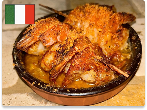

Baked Chicken and Collard Greens

Scampi Di Gamberi

Churrasco Con Arroz

Hambagu

Sancocho Dominicano

Omelette Roulée
Bistec Empanizado (Cuban Breaded Steak)
⭐️⭐️⭐️⭐️⭐️ Absolutely flawless! This Bistec Empanizado took me straight back to my abuela’s kitchen. The steak was pounded perfectly thin, seasoned just right, and fried to a golden crisp that was light yet crunchy — not greasy at all. The traditional marinade of garlic, sour orange, and spices came through beautifully, and the breading held up like it should. Served with white rice, black beans, and a lime wedge — it was Cuban home-cooking perfection. Hats off to the cook for nailing the technique and honoring the tradition so well!
⭐️⭐️⭐️⭐️⭐️ Absolutely flawless! This Bistec Empanizado took me straight back to my abuela’s kitchen. The steak was pounded perfectly thin, seasoned just right, and fried to a golden crisp that was light yet crunchy — not greasy at all. The traditional marinade of garlic, sour orange, and spices came through beautifully, and the breading held up like it should. Served with white rice, black beans, and a lime wedge — it was Cuban home-cooking perfection. Hats off to the cook for nailing the technique and honoring the tradition so well!
Doro Wat (Ethiopian Spiced Chicken Stew) Recipe Comment
⭐️⭐️⭐️⭐️️ This Doro Wat recipe was absolutely amazing! The spice mix really stood out — so rich, complex, and warming. I had never used berbere before, and it added such a unique depth of flavor. The slow-cooked onions created a perfect base, and the tender chicken just soaked up all the deliciousness. I served it with injera, and it felt like a comforting, flavorful feast. Definitely a dish I’ll be making again when I want something bold and satisfying!
⭐️⭐️⭐️⭐️️ This Doro Wat recipe was absolutely amazing! The spice mix really stood out — so rich, complex, and warming. I had never used berbere before, and it added such a unique depth of flavor. The slow-cooked onions created a perfect base, and the tender chicken just soaked up all the deliciousness. I served it with injera, and it felt like a comforting, flavorful feast. Definitely a dish I’ll be making again when I want something bold and satisfying!
Rabo Encendido (Cuban Oxtail Stew)
⭐️⭐️⭐️ This Rabo Encendido was incredibly tender and flavorful — the meat practically fell off the bone, and the sauce was rich, spicy, and comforting in that way only Cuban stews can be. That said, I did notice the use of red wine in the braise, which isn’t typically part of the traditional Cuban approach. While it added a nice depth, I missed the sharper tang of citrus or vinegar that usually cuts through the richness. Still, a beautifully executed dish with lots of heart and warmth — just a gentle nudge toward a more classic touch next time!
⭐️⭐️⭐️ This Rabo Encendido was incredibly tender and flavorful — the meat practically fell off the bone, and the sauce was rich, spicy, and comforting in that way only Cuban stews can be. That said, I did notice the use of red wine in the braise, which isn’t typically part of the traditional Cuban approach. While it added a nice depth, I missed the sharper tang of citrus or vinegar that usually cuts through the richness. Still, a beautifully executed dish with lots of heart and warmth — just a gentle nudge toward a more classic touch next time!
Kimchi Jjigae
⭐️⭐️⭐️⭐️⭐️ This was such a simple and satisfying dish! I loved how quick it was to throw together — just a few ingredients, but so much flavor. The kimchi really shines, and the broth has that perfect balance of tangy and savory. I made a big pot and it easily fed my whole family, with leftovers for the next day. We served it with rice, and everyone went back for seconds. A fantastic, no-fuss meal that’s now in our regular rotation!
⭐️⭐️⭐️⭐️⭐️ This was such a simple and satisfying dish! I loved how quick it was to throw together — just a few ingredients, but so much flavor. The kimchi really shines, and the broth has that perfect balance of tangy and savory. I made a big pot and it easily fed my whole family, with leftovers for the next day. We served it with rice, and everyone went back for seconds. A fantastic, no-fuss meal that’s now in our regular rotation!

Cerdo en Salsa de Limon
Pierna De Cordero
Lemon Spiced Grouper
Curry Goat
Eggs Benedict
Roasted Tomato Soup